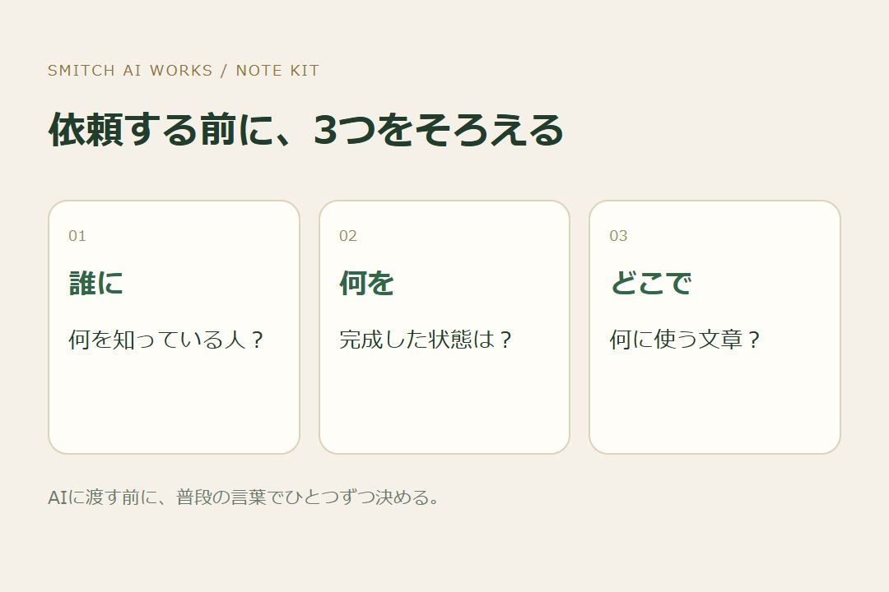
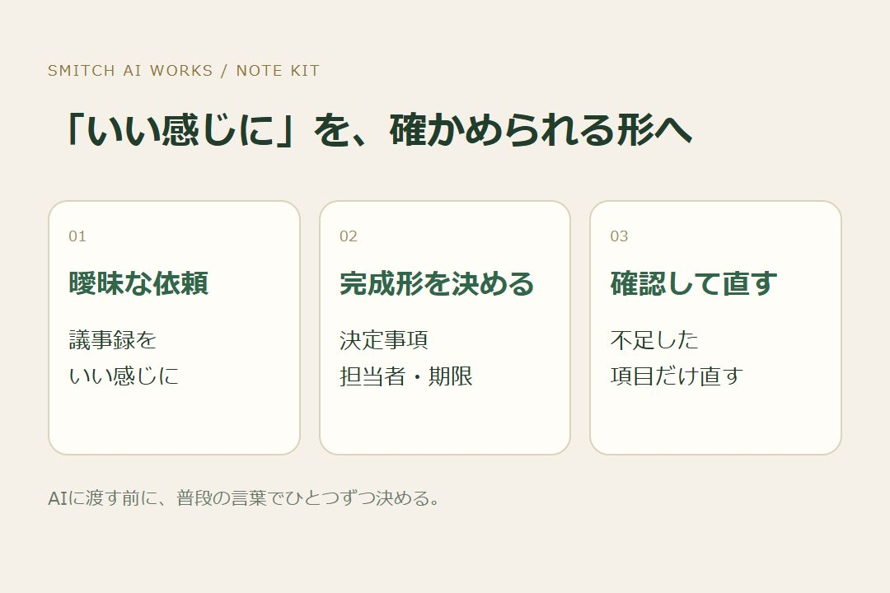
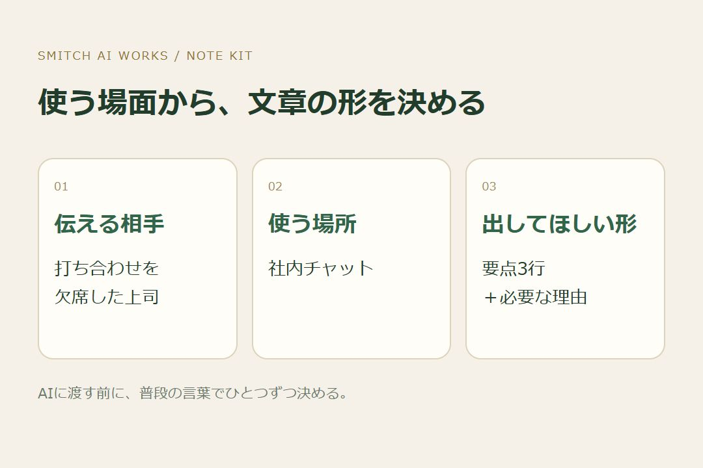

AIを開いたのに、何を入力すればいいか分からない。 ようやく「いい感じにまとめて」と送っても、欲しかったものと少し違う。直してもらううちに、最初から自分で書いた方が早かった気がする。
そんなときは、長い指示文を探す前に、頼む仕事を小さく決めてみてください。 まずそろえるのは、誰に、何を、どこで使うかの3つです。

同じ内容でも、初めて読む人と、毎日その仕事をしている人では、必要な説明が違います。 たとえば社内の打ち合わせをまとめる場面。参加していた同僚なら結論だけで通じても、欠席した上司には、なぜその結論になったかも必要です。
「議事録をまとめて」よりも、こう頼む方が、目指すものをそろえやすくなります。
打ち合わせを欠席した上司が、決まったことと理由を把握できるようにまとめてください。
読者を年齢や職業だけで決める必要はありません。 「何を知っていて、何をまだ知らない人なのか」まで考えると、入れる説明と省く説明が見えてきます。

「分かりやすく」「いい感じに」は、完成形が人によって違う言葉です。 そこで、受け取ったものを見て、仕事が終わったと判断できる形に変えます。
打ち合わせの例なら、「決定事項、担当者、期限の3項目に整理する」。 記事なら、「読み終えた人が、最初の一歩を一つ選べるようにする」。 メールなら、「相手が、返信で何を答えればいいか分かるようにする」。
こうしておくと、出てきた文章を好き嫌いだけで直さずに済みます。 担当者が抜けていたら、その項目を足してもらう。依頼内容が曖昧なら、返信してほしいことを最後に置く。直す基準を先に持てるわけです。

チャットで送る文章と、印刷して配る文章では、読みやすい形も変わります。 スマホのチャットなら、短い段落と最初の結論が役立つ場面があります。会議で使う資料なら、あとから確認できる見出しや表が必要かもしれません。
先ほどの指示に、使う場面を足してみます。
打ち合わせを欠席した上司へ、社内チャットで共有します。決定事項・担当者・期限が分かるように、最初に要点を3行で、その下に必要な理由をまとめてください。分からない担当者や期限は、推測せず「未確認」と書いてください。
難しい専門用語を足したわけではありません。 相手、完成形、使う場所を、普段の言葉で伝えただけです。
3つを決めても、一度で欲しい答えが出るとは限りません。 ただ、何が違うのかを伝える手がかりは増えます。
「もっとよくして」ではなく、「理由が長いので2つに絞って」「期限が見つけにくいので項目ごとに分けて」と頼めるようになります。 最後は、元の記録と照らして、固有名詞や決定事項が合っているかを確認します。
AIを使う目的は、指示文を上手に書くことだけではありません。 自分が進めたい仕事を、一つ前へ動かすことです。
次にAIを開くときは、いま止まっている仕事を一つ選んでください。 そして「誰に、何を、どこで使うか」を、一文ずつ書いてみる。 そこまで決まれば、最初の依頼はもう作り始められています。